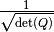
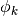
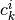
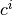
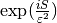

HagedornWavepacketNew¶
About the HagedornWavepacketNew class¶
The WaveBlocks Project
@author: R. Bourquin @copyright: Copyright (C) 2010, 2011, 2012, 2013, 2014, 2015, 2016 R. Bourquin @license: Modified BSD License
Inheritance diagram¶
Class documentation¶
-
class
WaveBlocksND.HagedornWavepacketNew(dimension, ncomponents, eps)[source]¶ This class represents homogeneous vector valued Hagedorn wavepackets
 with
with  components in
components in  space dimensions.
space dimensions.-
__init__(dimension, ncomponents, eps)[source]¶ Initialize a new homogeneous Hagedorn wavepacket of the new kind.
Parameters: - dimension – The space dimension the packet has.
- ncomponents – The number of components the packet has.
- eps – The semi-classical scaling parameter
 of the basis functions.
of the basis functions.
Returns: An instance of
HagedornWavepacket.- dimension – The space dimension
-
evaluate_at(grid, *, component=None, prefactor=False)¶ Evaluate the Hagedorn wavepacket
at the given nodes  .
.Parameters: - grid (A class having a
get_nodes(...)()method.) – The grid containing the nodes .
containing the nodes . - component – The index
 of a single component
of a single component  to evaluate.
(Defaults to
to evaluate.
(Defaults to Nonefor evaluating all components.) - prefactor (Boolean, default is
False.) – Whether to include a factor of .
Returns: A list of arrays or a single array containing the values of the
at the nodes .- grid (A class having a
-
evaluate_basis_at(grid, component, *, prefactor=False)¶ Evaluate the basis functions  recursively at the given nodes
.Parameters: - grid (A class having a
get_nodes(...)()method.) – The grid containing the nodes . - component – The index of a single component to evaluate.
- prefactor (Boolean, default is
False.) – Whether to include a factor of .
Returns: A two-dimensional ndarray
 of shape
of shape  where
the entry
where
the entry ![H[\mu(k), i]](../_images/math/c4ca09037b0c386d796812584b0498bfbda6820f.png) is the value of
is the value of  .
.- grid (A class having a
-
gen_id()¶ Generate an (unique) ID per wavepacket instance.
-
get_basis_shapes(*, component=None)¶ Retrieve the basis shapes
 for each component .
for each component .Parameters: component (int) – The component whose basis shape we request. (Default is
Nonewhich means to return the basis shapes for all components.Returns: The basis shape for an individual component or a list with all shapes.
-
get_coefficient(component, index)¶ Retrieve a single coefficient  of the specified component
of .Parameters: - component – The index of the component we want to update.
- index (A tuple of integers.) – The multi-index
 of the coefficient we want to update.
of the coefficient we want to update.
Returns: A single complex number.
Raise: ValueErrorFor invalid indices or .- component – The index
-
get_coefficient_vector(*, component=None)¶ Retrieve the coefficients for all components
simultaneously.Warning
This function does not copy the input data! This is for efficiency as this routine is used in the innermost loops.
Parameters: component (int) – The component whose coefficients we request. (Default is
Nonewhich means to return the coefficients for all components.Returns: The coefficients  of all components stacked into a single long column vector.
-
get_coefficients(*, component=None)¶ Returns the coefficients for some component
of
or all the coefficients  of all components.
of all components.Note: this method copies the data arrays.
Parameters: component (int (Default is Nonemeaning all)) – The index of the component we want to retrieve.Returns: A single ndarray with the coefficients of the given component or a list containing the ndarrays for each component. Each ndarray is two-dimensional with a shape of  .
.Raise: ValueErrorFor invalid component indices.
-
get_description()[source]¶ Return a description of this wavepacket object. A description is a
dictcontaining all key-value pairs necessary to reconstruct the current instance. A description never contains any data.
-
get_dimension()¶ Returns: The space dimension of the wavepacket .
-
get_eps()¶ Retrieve the semi-classical scaling parameter
of the wavepacket.Returns: The value of .
-
get_gradient_operator()[source]¶ Return the
Gradientsubclass suitable for computing gradients of this wavepacket.Returns: A GradientHAWPinstance.
-
get_id()¶ Return the packet ID of this wavepacket instance. The ID may be used for storing packets in associative lists.
Returns: The ID of the current instance.
-
get_innerproduct()¶ Return the
InnerProductsubclass instance used computing inner products and evaluating brakets.Returns: The current InnerProductsubclass instance.
-
get_number_components()¶ Returns: The number of components the wavepacket has.
-
get_parameters(component=None, aslist=False, key=('q', 'p', 'Q', 'P', 'S'))[source]¶ Get the Hagedorn parameter set
 of the wavepacket .
of the wavepacket .Parameters: - component – Dummy parameter for API compatibility with the inhomogeneous packets.
- aslist – Return a list of parameter tuples. This is for API compatibility
with inhomogeneous packets.
Returns: The Hagedorn parameter set
 in this order.
in this order.
-
norm(component=None, summed=False)¶ Calculate the
 norm
norm  of the wavepacket .
of the wavepacket .Parameters: - component (int or
None.) – The index of the component whose norm is calculated.
The default value is Nonewhich means to compute the norms of all components. - summed (Boolean, default is
False.) – Whether to sum up the norms of the
individual components .
of the
individual components .
Returns: The norm of
or the norm of or a list with the
norms of all components. Depending on the values of componentandsummed.- component (int or
-
set_basis_shapes(basis_shape, *, component=None)¶ Set the basis shape
 of a given component or for all components.
of a given component or for all components.Parameters: - basis_shape (A subclass of
BasisShape.) – The basis shape for an individual component or a list with all shapes. - component (int) – The component whose basis shape we want to set. (Default is
Nonewhich means to set the basis shapes for all components.
- basis_shape (A subclass of
-
set_coefficient(component, index, value)¶ Set a single coefficient of the specified component
of .Parameters: - component – The index of the component we want to update.
- index (A tuple of integers.) – The multi-index of the coefficient we want to update.
- value – The new value of the coefficient .
Raise: ValueErrorFor invalid indices or .- component – The index
-
set_coefficient_vector(vector)¶ Set the coefficients for all components
simultaneously.Warning
This function does not copy the input data! This is for efficiency as this routine is used in the innermost loops.
Parameters: vector (A two-dimensional ndarray of appropriate shape.) – The coefficients of all components as a single long column vector.
-
set_coefficients(values, *, component=None)¶ Update all the coefficients
of or update
the coefficients of the components only.Note: this method copies the data arrays.
Parameters: - values (An ndarray of suitable shape or a list of ndarrays.) – The new values of the coefficients of .
- component (int (Default is
Nonemeaning all)) – The index of the component we want to update with new coefficients.
Raise: ValueErrorFor invalid component indices.- values (An ndarray of suitable shape or a list of ndarrays.) – The new values of the coefficients of
-
set_id(anid)¶ Manually set a new ID for the current wavepacket instance.
Parameters: anid (int) – The new ID.
-
set_innerproduct(innerproduct)¶ Set the
InnerProductsubclass instance used for computing inner products and evaluating brakets.Parameters: innerproduct – The new InnerProductsubclass instance.
-
set_parameters(Pi, component=None, key=('q', 'p', 'Q', 'P', 'S'))[source]¶ Set the Hagedorn parameters
of the wavepacket .Parameters: - Pi – The Hagedorn parameter set in this order.
- component – Dummy parameter for API compatibility with the inhomogeneous packets.
- Pi – The Hagedorn parameter set
-
slim_recursion(grid, component, *, prefactor=False)¶ Evaluate the Hagedorn wavepacket
at the given nodes .
This routine is a slim version compared to the full basis evaluation. At every moment
we store only the data we really need to compute the next step until we hit the highest
order basis functions.Parameters: - grid (A class having a
get_nodes(...)()method.) – The grid containing the nodes . - component – The index of a single component to evaluate.
- prefactor (Boolean, default is
False.) – Whether to include a factor of .
Returns: A list of arrays or a single array containing the values of the
at the nodes .Note that this function does not include the global phase .
- grid (A class having a
-